Real work / Surrey, BC
Fresh cuts.
Clean proof.
A growing archive of real RD Cutz tapers, fades, beard work, designs, and in-chair details—organized so the work speaks for itself.
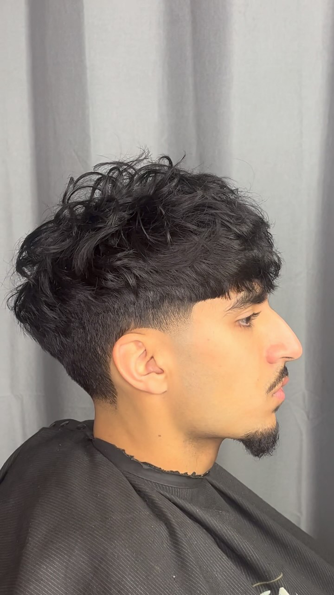
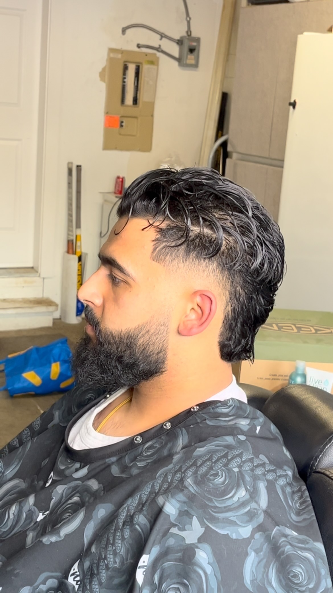
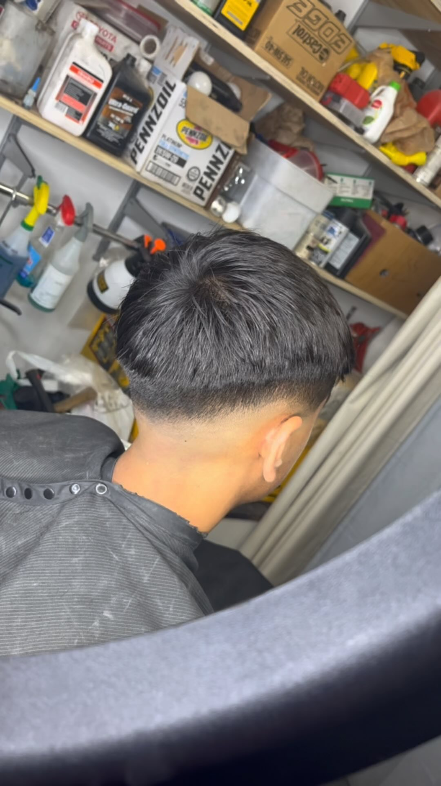
Browse the portfolio
Tap a collection to narrow the work.

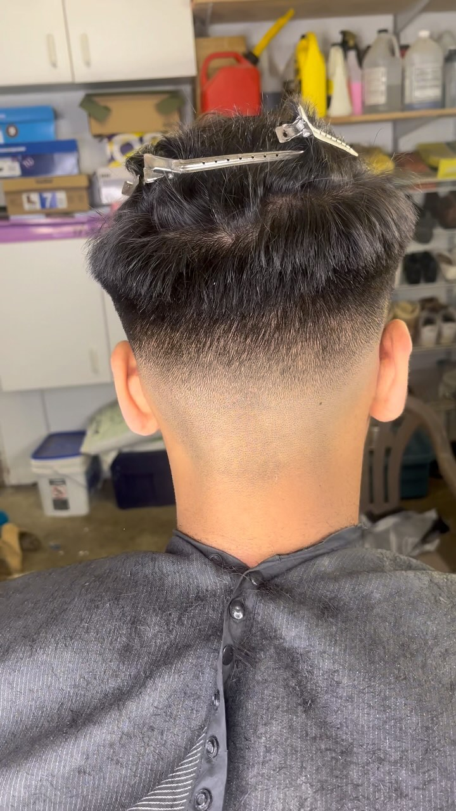
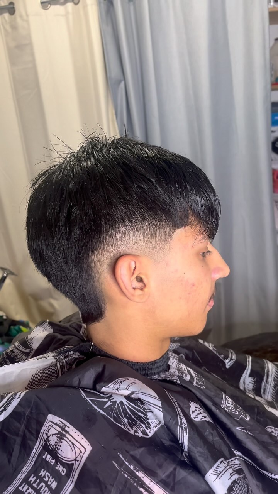

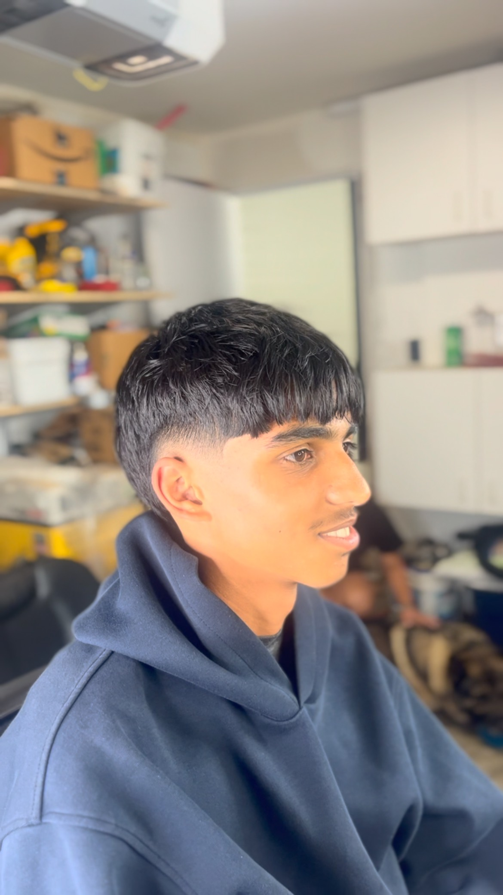
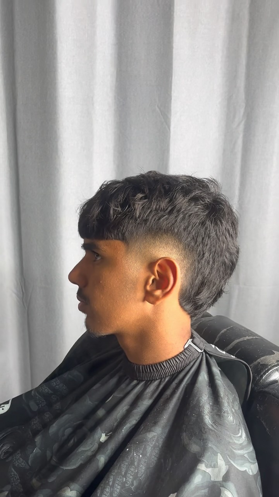
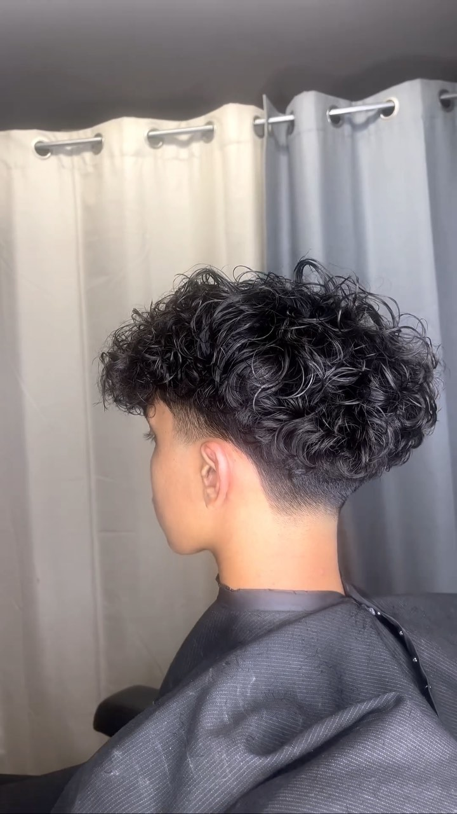
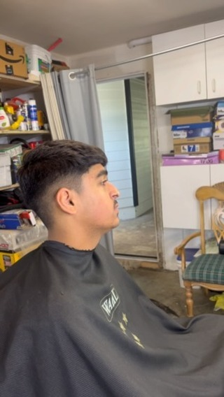
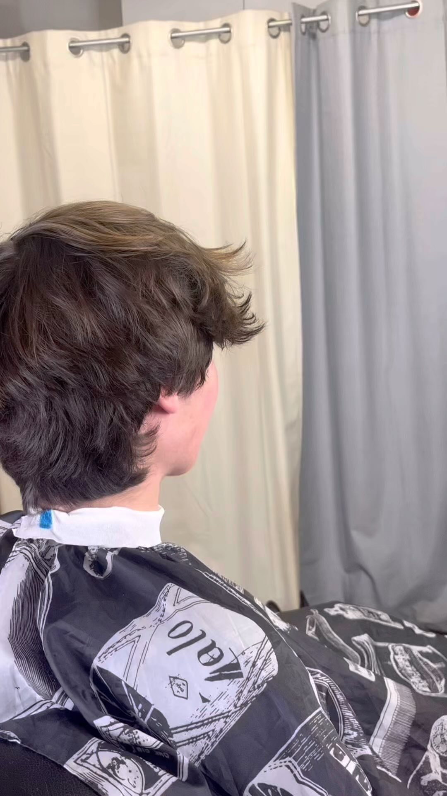
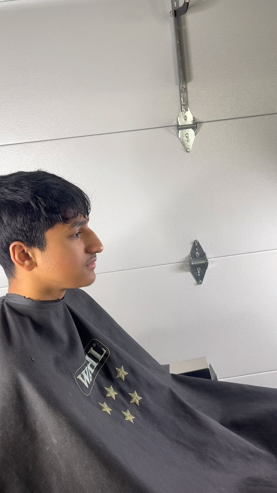
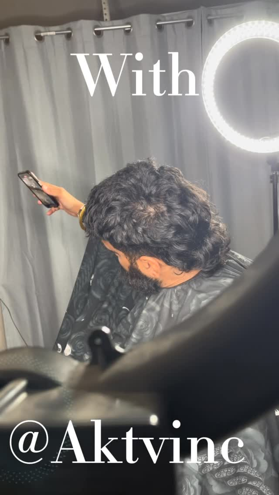